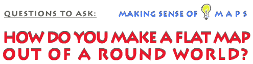

This is an archived copy of History Matters, provided by the Roy Rosenzweig Center for History and New Media. To explore this content in a new interface, visit Who Built America?.

 |
 Creating a map involves fitting the round world onto a flat surface. To visualize the problems inherent in this transformation, consider what happens to a hollow ball when it is completely flattened. Flattening distorts the ball. There is no way to flatten without bending and tearing, forcing a three dimensional object to become a two dimensional surface. Utilizing mathematics, cartographers have created a variety of less-than-perfect solutions to this problem. These solutions, known as map projections, produce maps that represent the same place, but these maps can have very different appearances. Perhaps you have seen a map that shows Greenland's area to be much larger than Australia's. In reality, Australia is three times larger than Greenland. Things are not always as they might seem when you look at maps. On a flat map many of the spatial properties such as size, shape, angular relationships, and distance are compromised in the projection process. A cartographer may be able to preserve one of these attributes but not the others. This means that all flat maps contain some type of distortion. A conscientious cartographer chooses a projection that best illustrates their purpose for the map. Since purposes may differ, maps of the same place can have very different appearances. For a detailed discussion of map projections and their properties see Peter Dana's contributions on projections in the Geographer's Craft Project.
|
|||
 |
||||